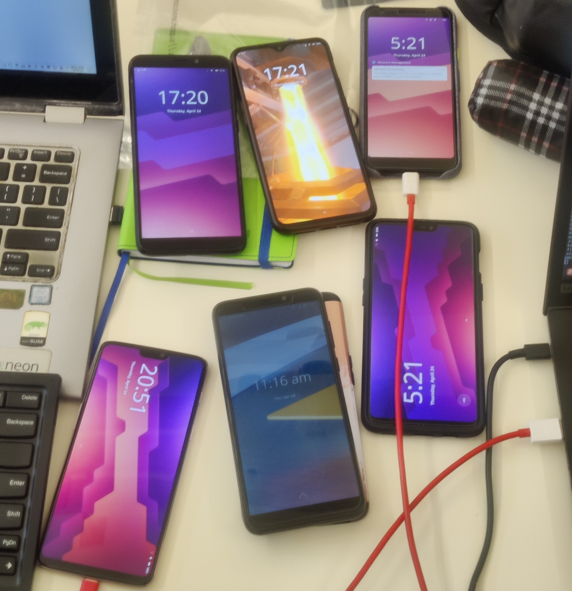

What happens when you put three mobile OS devs into one room for more than a few minutes?

Fun times, that's what!
A few days ago I returned back home from Graz after attending my very first Plasma Sprint and it's been an incredible experience throughout. Everyone there was incredibly welcoming and we managed to not only have a great time, but also got a lot done.
As you might expect, my focus was mostly on Plasma Mobile, which was helped by Devin and Bhushan also attending in person. We chatted about technical challenges around power management, display notches, haptic feedback and so so much more - but maybe even more exciting in the short term, we managed to reproduce and fix a number of very annoying bugs that stopped me (and probably some others) from daily driving Plasma Mobile with my main SIM.
While calling on my OnePlus 6T worked really well for a while already there was a... quite annoying issue when receiving calls while the phone was locked: Plasma Dialer would receive two call notifications which in turns lead to the ring tone being doubled. So far so bad. The worse part was when accepting said call one of the two ring tones would continue. Now, the call itself worked fine, microphone, speakers, all good - you just had the ringing in your ears the entire time and had to reboot to get rid of it. Not great!
This was ultimately an issue with events being connected too often in certain cases like when a SIM card has a pin lock or the phone has (working) dual SIM. This is now fixed from Plasma 6.3.5 onwards. Yes, I kept the dev build on my phone until then ;)
The second big issue was that any time Dialer opened on top of the lock screen it would get stuck there after closing. The last frame rendered by the app would remain frozen on the lockscreen until it was rebooted or unlocked. The same bug could lead to essentially softlocking the phone on boot if session restore was enabled and the phone app was open, as it would initialize on top of the first-boot lockscreen and then stay frozen there (Which is why I disabled session restore for mobile before already).
This was ultimately an issue in KWin and how it handles certain effect types on the lockscreen and has also been fixed for 6.3.5. Until then as a workaround it's possible to disable KWin's Scale effect (which animates opening and closing windows) as that is what "got stuck" on the lockscreen.
To debug and fix both of these we made about 100 calls to and from various Plasma Mobile devices throughout the Sprint - Sorry to all the people who had to hear constant ringing, we really tried having it as quiet as possible!
As far as merged changes go, it's... short this time around since free time wasn't kind to me these last few months, so most of what I did, I did on the sprint with others and the blog-worthy parts of that are covered above, but there's a bit:
Feels a bit weird to have a list for one item, so let's make it two:
I did make some progress on other tasks though, even if they (still) aren't done yet:
I want to circle back to the Sprint and emphasize again how amazing it was - and not only that, since then I've kept my SIM card in my postmarketOS Plasma Mobile phone because the two dealbreaker bugs for me are now fixed. My Android will unfortunately stay with me for the foreseeable future mostly due to banking/payment apps, but it's a step in the right direction.
As an extra goodie for the end, I want to show off Balatro running natively on Plasma Mobile: https://mastodon.gamedev.place/@l_prod/114401321865300843 (Tech can be so cool